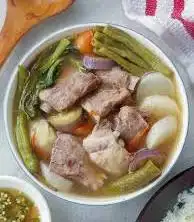

Sinigang Recipe

Pork Sinigang is a delicous Filipino sour soup dish. The soup is made from any cut
of pork along tomato, string beans, spinach, and tamarind.
Ingredients
- Pork
- Tomato
- Onion
- Okra
- String Beans
- Kangkong
- Egplant
- Patis
- Sinigang Mix
- Pork Cubes
Steps
- Boil the pork together with quartered onions and tomatoes.
- If the pork is tender, and sinigang mix, pork cubes, and Patis to taste.
- Add the vegetables except kangkong leaves, simmer for around five minutes.
- Add kangkong leaves and simmer for around three minutes.
Back to Homepage